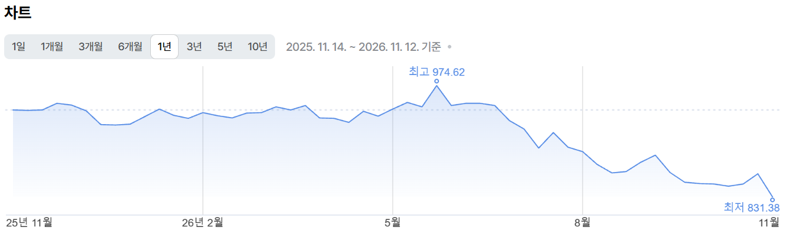
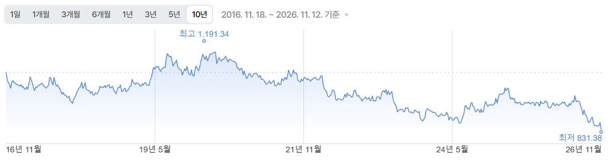
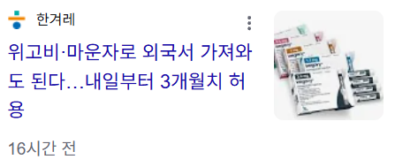
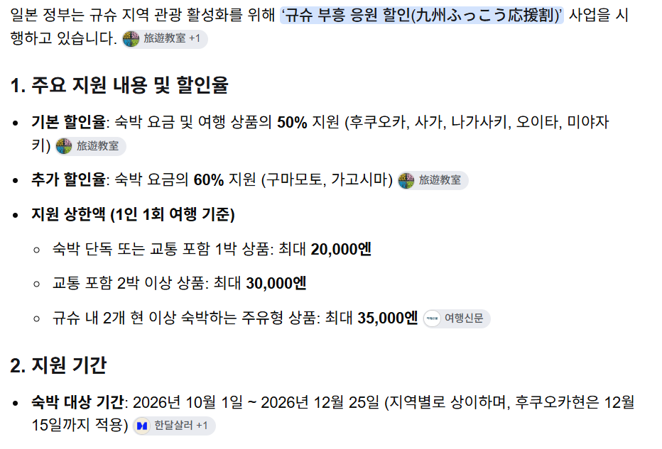

1년 기준 최저점?
ㄴㄴ

10년기준 최저점
ㅇㅇ

GLP-1 통관허용

규슈지역 숙박비 반값할인
돼지들 가서 먹고싶은거 실컷먹고, 돌아오는길에 마운자로 처방받아오면 개꿀 여행임


10년기준 최저점
ㅇㅇ

GLP-1 통관허용

규슈지역 숙박비 반값할인
돼지들 가서 먹고싶은거 실컷먹고, 돌아오는길에 마운자로 처방받아오면 개꿀 여행임
규슈할인은 근데 지금 다 나갔어 걍 허상임ㅋㅋ
어차피 엔화가 싸도 뭔 숙소가 40씩하고 ㅈㄴ비싸더라 ;;
꿀꿀 끼요오오오옷
마운자로 보따리상 하면 어떰?
하면 하는거겠지만 약사도 아니면서(약사여도 문제지만) 약 중고로 팔다가 걸리면 처벌 빡셀걸
괜히 보따리상 하다가 빨간줄 긁힌다
그냥 팔면 약사법 위반
당근에 팔면 계좌이체 내역있어서 국세청 걸림
이건 ㄹㅇ ㅈ된다 인생
못 갖고 들어오게 막은 이유가 있네~라고 할 뻔!
좆되고싶으면 하셈
처방약을 남에게 돈받고판다?ㅋㅋㅋ 빨간줄 스트레이트임
가족들 싸게 사주는거 아니면 걍 위험함
우리는 그걸 밀매라고 하기로 했어요
항공권에서 다까먹는다 ㄹㅇ
저기도 사람사는 동내라서 규슈 할인 뜨자마자 숙박비가 오름
'외국인메뉴판'
규슈지역 숙박비 마감됨
응 숙박비 두배로 올라서 그대로더라
환전 지금이니
후쿠오카 고쿠라 많이갔는데 시발 숙박비 존나 올라서 그냥 도쿄 오사카 가는게 훨남..
비행기값이문제지 뭐
지진 이슈때문에 좀 줄어든듯..
시간 많으면 배타고 갔다가 배타고 오면 굿이겠는데?ㅋ
뭐 이젠 유해의약품이 아니야? ㅋㅋㅋ
항공비 호텔비가 존나 올라서 ㅋㅋㅋㅋ
출장으로가서 법카 펑펑 쓸 땐 상관없는데 내돈주고 가면 애미씨발소리 나올 때 많음ㅋㅋㅋㅋ
환전 얼마해놓지
떨어지다 오르기시작하면 환전해야겠다
그만와 쉬발…
규슈 저거 헬조선짓 한다매 ㅋㅋ 2배로 올려두고 반값할인 해서 정가를 할인 가격인거처럼 눈속임 한다 하드만
그래도 위고비가 목적이면 사오는김에 관광까지 보너스로 가능하다는거임 ㅋㅋㅋ
애들아 구글 스토어 갔다와라 한국에서 못사는 품질좋은 픽셀이랑 핏빗 기기들 판다 직원들도 이쁘고 잘생김
참고로 규슈 타이밍맞게 가게돼서 캠페인 시작전부터 봤는데 진짜 동조선행정의 끝을봄
일본지방정부에서 어디서 어떻게한다고 명확하게 안줌
각 호텔들 혼란스러움 공식페이지도 제대로된정보 캠페인시작했는데도 안줌
호텔들마다 자란, 라쿠텐 등등 호텔예약홈페이지통해서하겠다, (물론 캠페인시작 일주일도뒤에시작함)
각호텔홈페이지에서 하겠다!
전화로만 받겠다 지랄임아주
항공권부터 숙박비가 미쳐날뛰어서
그냥 당일치기로 마운자로 처방만 받고 올라고